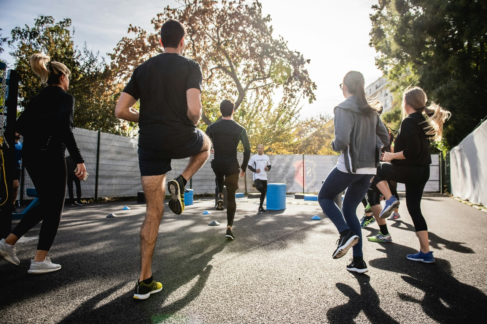

Transform Your Body and Life in Just 12 Weeks
Workout Description
Join our 12 -week fat loss program for a transformative journey towards a leaner, stronger you. With tailored workouts and expert nutrition guidance, we're here to help you shed excess weight and build a fitter, more confident body. From dynamic cardio sessions to targeted strength training, each workout is designed to torch fat and sculpt lean muscle. Ready to kickstart your fat loss journey? Join us today and unleash your full potential!
Transform your body and mindset with our eight-week fat loss program. Through a combination of intense workouts and nutritional support, you'll not only shed pounds but also gain strength, energy, and confidence. Take control of your health and start your journey towards lasting change. Join us now and let's make your fat loss goals a reality!
Transform Your Body and Life in Just 12 Weeks
Workout 1 - Full Body Circuit
| Exercise | Sets | Reps |
|---|---|---|
| Squats | 3 | 12,10 |
| Push-ups | 3 | 10,8 |
| Bent | 3 | 12,10 |
| Lunges | 3 | 12,10 |
| Plank | 3 | 30s |
Workout 2 - Cardio Intervals
| Exercise | Sets | Reps |
|---|---|---|
| Sprinting | 3 | 30s |
| Walking | 1min | (10 - 15) min |
Workout 3 - Strength Training
| Exercise | Sets | Reps |
|---|---|---|
| Deadlifts | 3 | 12,10 |
| Dumbbell Chest Press | 3 | 12,10 |
| Romanian Deadlifts | 3 | 12,10 |
| Lat Pulldowns | 3 | 12,10 |
| Lying Leg Curl | 3 | 12,10 |
| Russian Twists | 3 | 12 |
Workout 4 - HIIT Workout
| Exercise | Sets | Reps |
|---|---|---|
| Jump Squats | 5-6 | 30 sec |
| Mountain Climbers | 3-4 | 30 sec |
| Burpees | 4-5 | 45 sec |
| Light yoga or swimming | 1 | 30-45 min |
| Rest | 5 | 30 sec |
Cardio
There is a misconception that you shouldn’t do cardio at all if you want to gain mass. This isn’t accurate. Cardio is very important for aerobic health, recovery, and overall wellness. You don’t have to go run marathons or spend an hour on a Stepmill, but you should be doing active walking or cardio three to four times a week.
Schedule 20 minutes either after a workout or away from training. You should feel like you put in effort, but don’t take it to an extreme. You just want to be moving, not torching every single calorie you put in your body.
Conclusion
In just 12 weeks, this program can kickstart your fat loss journey with a balanced combination of strength training, cardio, and active recovery. By committing to consistent workouts and smart nutrition, you'll not only shed unwanted pounds but also build strength and confidence. Take the first step towards a healthier, fitter you today!